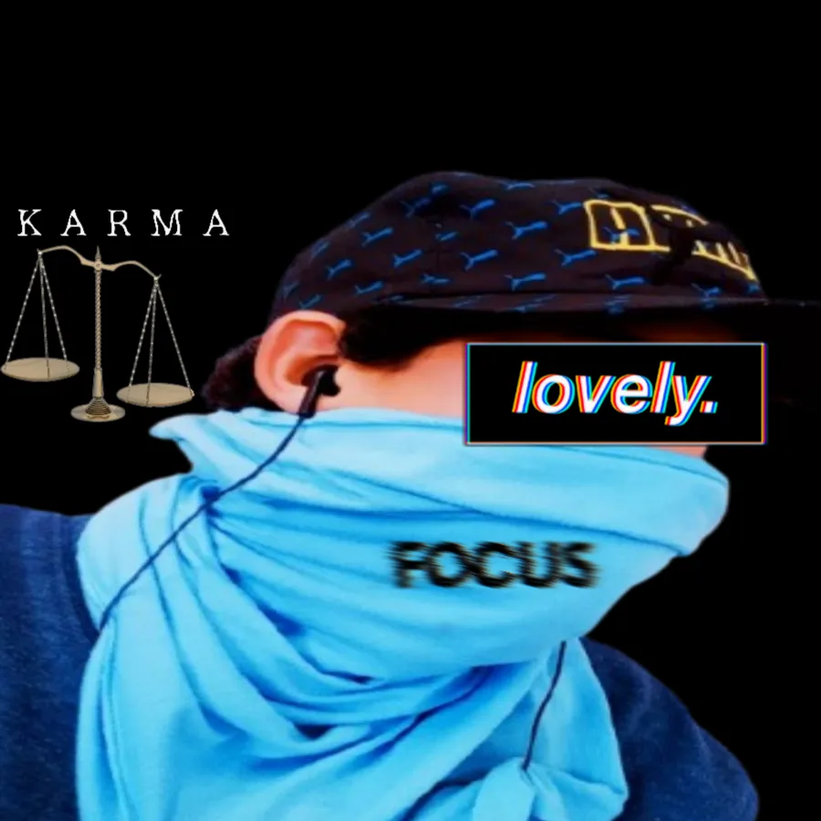
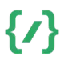

<!-- Botão para abrir o menu lateral -->
<button id="menuLateralBtn" class="menu-lateral-btn" style="left: 20px; right: auto;" onclick="toggleMenuLateral()">☰</button>

<!-- Menu lateral -->
<div id="menuLateral" class="menu-lateral oculto">
  <div class="menu-header">
    <canvas id="rainMenu"></canvas>
    <div class="menu-profile">
      
      <span class="menu-profile-name">Higor Rocha</span>
    </div>
    <button class="fechar-menu" onclick="toggleMenuLateral()">&times;</button>
  </div>
  <ul>
    <!-- Garantindo que o botão "Início" seja o primeiro item da lista -->
    <!-- Ajustando o botão "Início" para usar o novo ícone PNG de casa -->
    <li><a href="index.html" data-i18n="menu_item0"> Início</a></li>
    <li><a href="discord.html" data-i18n="menu_item1"> Discord Servers</a></li>
    <li><a href="youtube.html" data-i18n="menu_item2"> Youtube Canais</a></li>
    <li><a href="projetos.html" data-i18n="menu_item3"> Projetos</a></li>
  </ul>
</div>

<!-- Adicionando a importação do script para carregar 'toggleMenuLateral' -->
<script src="script.js"></script>
